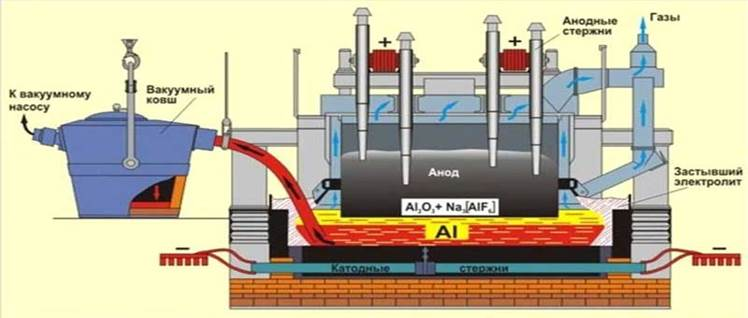

1.6 Формирование Проекта Национальной карты технологических задач и ключевых "критических" технологий по итогам технологического прогнозирования. Подготовка экспертно-аналитических материалов по самым актуальным вопросам развития науки и технологий, в том числе с учетом тенденций мировой науки
1.6.1 Проект Национальной карты технологических задач
«Национальная карта технологических задач», с учетом «критических» технологий, определяет направления производства, которые позволят получить научные и научно-технические результаты и создать технологии, являющиеся основой инновационного развития как внутреннего так и внешнего рынка продуктов и услуг. На основе аналитических данных состояния конкретного сектора экономики будут усилены те отрасли производства, которые обеспечат:
- переход к передовым технологиям, новым передовым материалам конструирования и экологически чистой ресурсосберегающей энергетике;
- устойчивое развития страны с переходом к высокопродуктивному, экологически чистому агропромышленному хозяйству с рациональным использованием земельных и водных ресурсов.
Переход к экономике высоких технологий и инноваций требует эффективных преобразований новых знаний в новые технологии, продукты и услуги для повышения качества жизни людей. В этой связи, основными целями научно-технической политики страны являются:
· подготовка высококвалифицированных специалистов,
· разработка наукоемких, ресурсосберегающих и экологически чистых производств,
· поэтапная замену сырьевой направленности экономики на обрабатывающую.
Международный опыт показывает, что реализация научно- технической политики начинается с определения приоритетов научно- технологических направлений и «критических» технологий.
«Критические» технологии – это технологии, имеющие важное социально-экономическое значение или для обороны страны и безопасности государства. Наряду с термином «критические технологии» употребляют такие понятия, как высокие или наукоемкие технологии.
Для реализации процессов по «критическим технологиям» на конкретном виде отрасли производства рассматривается алгоритм технологии производства. Технологические расчеты составляются специалистами соответствующих профилей.
Таким образом, «Национальная карта технологических задач» является руководящим документом, алгоритмом технологического производства, которое должно научно сопровождаться соответствующими специалистами для приложения новых знаний в совершенствование технологии процесса. Например, «технологическая карта» для получения алюминия. Алюминий является продукцией горно-металлургического комплекса, относящаяся к передовым материалам.
Проект
«Технологическая карта производства и получения алюминия» Приоритет ІІ. «Энергия, передовые материалы и транспорт» Целевой продукт: алюминий. Химический знак Al. M(Al) =27г/моль
Металлический алюминий получают в три стадии:
1. Получение глинозема (Al2O3) из алюминиевых руд
2. Получение алюминия из глинозема
3. Рафинирование алюминия.
Получение глинозема
Около 95 % всего глинозема получают из бокситовых руд.
Бокситовая руда
Содержание глинозёма в промышленных бокситах колеблется от 40% до 60% и выше. Он используется также в качестве флюса в чёрной металлургии.
Основные примеси в бокситах – это Fe2O3, SiO2, TiO2. К малым примесям бокситов относят: Na2O, K2O, CaO, MgO, редкоземельные элементы, Cr, P, V, F, органику.
Обычно бокситы классифицируют:
· по цвету;
· по основному минералу (чаще они бывают смешанными);
· по возрасту.
Основными критериями качества алюминиевой руды являются:
1. Кремниевый модуль (Мsi = Al2O3/SiO2 (% масс.) Чем больше кремниевый модуль, тем лучше качество (Мsi = 7).
2. Содержание железа в пересчете на Fe2O3. Если содержание Fe2O3 составляет около 18% масс., то боксит считается высокожелезистым. Чем больше содержание железа, тем труднее добыть бокситы.
3. Содержание серы. Наличие большого количества серы усложняет переработку боксита.
4. Содержание карбонатов в пересчете на CO3(2-). Наличие большого количества карбонатов также усложняет переработку боксита.
Бокситы применяют:
· в производстве глинозема;
· в производстве абразивных материалов;
· в производстве огнеупорных материалов;
· в качестве флюса для выплавки мартеновской стали;
· для сушки газов и чистки нефти от серы;
· в качестве красителя.
На сегодняшний день главными поставщиками боксита являются:
· Австралия, там находятся также огромные залежи Fe, Au, U, Ni, Co, Cu и др. Выгоднее покупать сырье у Австралии, чем перерабатывать свое;
· Гвинея, у России есть несколько купленных месторождений;
· Центральная и Южная Америка (Ямайка, Гайана, Суринам);
· Бразилия.
В Европе все месторождения истощены. Осуществляются поставки бокситов из Греции, но данное сырье низкого качества.
В Казахстане месторождение бокситов находится на территории Тарановского района Костанайской области. Бокситы залегают в мезозойских отложениях платформенного чехла на глубине 15-48 м. Рудные тела линзовидные, гнездообразные, мощность 5,1-25,3 м, длина 50
- 600 м, ширина 50 - 350 м.
Получение глинозема из бокситовых руд
Поскольку алюминий амфотерен, глинозем получают тремя способами:
- щелочным,
- кислотным;
- электролитическим.
Наибольшее распространение имеет щелочной способ (метод К. И. Байера, разработанный в России в конце ХIХ века и применяемый для переработки высокосортных бокситов с небольшим количеством (до 5-6 %) кремнезема). С тех пор техническое выполнение его было существенно улучшено. Схема производства глинозема по способу Байера представлена на рисунке 1.6.1.
Бокситы перерабатывают в алюминий поэтапно:
1) получают оксид алюминия (глинозём);
2) металлический алюминий (электролитическим способом в присутствии криолита).
Сущность способа состоит в том, что алюминиевые растворы быстро разлагаются при введении в них гидроокиси алюминия, а оставшийся от разложения раствор после его выпаривания в условиях интенсивного перемешивания при 169-170°С может вновь растворять глинозем, содержащийся в бокситах. Этот способ состоит из следующих основных операций:
1. Подготовка боксита, заключающаяся в его дроблении и измельчении в мельницах; в мельницы подают боксит, едкую щелочь и небольшое количество извести, которая улучшает выделение Al2O3; полученную пульпу по дают на выщелачивание.
Рисунок 1.6.1 Схема получения глинозема по способу Байера
AlOOH+NaOH→NaAlO2+H2O или Al(OH)3+NaOH→NaAlO2+2H2O; (1)
Содержащийся в боксите кремнезем взаимодействует со щелочью и переходит в раствор в виде силиката натрия: SiO2+2NaOH→Na2SiO3+H2O; В растворе алюминат натрия и силикат натрия образуют нерастворимый натриевый алюмосиликат; в нерастворимый остаток переходят окислы титана и железа, предающие остатку красный цвет; этот остаток называют красным шламом. По окончании растворения полученный алюминат натрия разбавляют водным раствором щелочи при одновременном понижении температуры на 100 °С;
Выщелачивание боксита (в последнее время применяемые до сих пор блоки автоклавов круглой формы частично заменены трубчатыми автоклавами, в которых при температурах 230-250°С (500-520К) происходит выщелачивание), заключающееся в химическом его разложении от взаимодействия с водным раствором щелочи; гидраты окиси алюминия при взаимодействии со щелочью переходят в раствор в виде алюмината натрия.
2. Отделение алюминатного раствора от красного шлама, обычно осуществляемое путем промывки в специальных сгустителях; в результате этого красный шлам оседает, а алюминатный раствор сливают и затем фильтруют (осветляют). В ограниченных количествах шлам находит применение, например, как добавка к цементу. В зависимости от сорта бокситов на 1 т полученной окиси алюминия приходится 0,6-1,0 т красного шлама (сухого остатка).
3. Разложение алюминатного раствора. Его фильтруют и перекачивают в большие емкости с мешалками (декомпозеры). Из пересыщенного раствора при охлаждении на 60°С (330 К) и постоянном перемешивании извлекается гидроокись алюминия Al(OH)3. Так как этот процесс протекает медленно и неравномерно, а формирование и рост кристаллов гидроокиси алюминия имеют большое значение при ее дальнейшей обработке, в декомпозеры добавляют большое количество твердой гидроокиси – затравки: Na2O ·Al2O3 + 4H2O→Al(OH)3 + 2NaOH.
4. Выделение гидроокиси алюминия и ее классификации; это происходит в гидроциклонах и вакуум-фильтрах, где от алюминатного раствора выделяют осадок, содержащий 50-60% частиц Al(OH)3. Значительную часть гидроокиси возвращают в процесс декомпозиции как затравочный материал, которая и остается в обороте в неизменных количествах. Остаток после промывки водой идет на кальцинацию; фильтрат также возвращается в оборот (после концентрации в выпарных аппаратах – для выщелачивания новых бокситов).
5. Обезвоживание гидроокиси алюминия (кальцинации). Это завершающая операция производства глинозема; ее осуществляют в трубчатых вращающихся печах, а в последнее время также в печах с турбулентным движением материала при температуре 1150-1300 °С; сырая гидроокись алюминия, проходя через вращающуюся печь, высушивается и обезвоживается; при нагреве происходят последовательно следующие структурные превращения:
Al(OH)3 → AlOOH → γ-Al2O3 → α-Al2O3 200 °C – 950 °С – 1200 °С.
В окончательно прокаленном глиноземе содержится 30-50% α-Al2O3 (корунд), остальное γ-Al2O2.
Этим способом извлекается 85-87% от всего получаемого глинозема. Полученная окись алюминия представляет собой прочное химическое соединение с температурой плавления 2050 ° С [7].
Получение алюминия электролизом
Электролитическое восстановление окиси алюминия, растворенной в расплаве на основе криолита, осуществляется при 950-970°С в электролизере. Электролизер состоит из футерованной углеродистыми блоками ванны, к подине которой подводится электрический ток. Жидкий алюминий, который выделяется на подине, служащей катодом, тяжелее расплава соли электролита, поэтому собирается на угольном основании, откуда его периодически откачивают. Сверху в электролит погружены угольные аноды, которые сгорают в атмосфере выделяющегося из окиси алюминия кислорода, выделяя окись углерода (CO) или двуокись углерода (CO2). На практике находят применение два типа анодов:
- самообжигающиеся аноды Зедерберга, состоящие из брикетов, так называемых «хлебов» массы Зедерберга (малозольный уголь с 25-35% каменноугольного пека), набитых в алюминиевую оболочку; под действием высокой температуры анодная масса обжигается (спекается);
- обожженные, или «непрерывные», аноды из больших угольных блоков (например, 1900 × 600 × 500 мм массой около 1,1 т).

Рисунок 1.6.2. Схема электролизера
Рисунок 1.6.3 Баланс сырья и энергии при получении 1 т алюминия
Сила тока на электролизерах составляет 150 000 А. Они включаются в сеть последовательно, т. е. получается система (серия) – длинный ряд электролизеров. Рабочее напряжение на ванне, составляющее 4-5 В, значительно выше напряжения, при котором происходит разложение окиси алюминия, поскольку в процессе работы неизбежны потери напряжения в различных частях системы. Баланс сырья и энергии при получении 1 т алюминия представлен на рисунке 1.6.3.
В реакционном сосуде окись алюминия превращается сначала в хлорид алюминия. Затем в плотно изолированной ванне происходит электролиз AlCl3, растворенного в расплаве солей KCl, NaCl. Выделяющийся при этом хлор отсасывается и подается для вторичного использования; алюминий осаждается на катоде.
Преимуществами данного метода перед существующим электролизом жидкого криолитоглиноземного расплава (Al2O3, растворенная в криолите Na3AlF6) считают: экономию до 30 % энергии; возможность применения окиси алюминия, которая не годится для традиционного электролиза (например, Al2O3 С высоким содержанием кремния); замену дорогостоящего криолита более дешевыми солями; исчезновение опасности выделения фтора
Получение рафинированного алюминия
Для алюминия рафинирующий электролиз с разложением водных солевых растворов невозможен. Поскольку для некоторых целей степень очистки промышленного алюминия (Al 99,5-Al 99,8), полученного электролизом криолитоглиноземного расплава, недостаточна, из промышленного алюминия или отходов металла путем рафинирования получают еще более чистый алюминий (Al 99,99 R). Наиболее известен метод рафинирования — трехслойный электролиз.
Рафинирование методом трехслойного электролиза
Одетая стальным листом, работающая на постоянном токе (рисунок 1.6.4) ванна для рафинирования состоит из угольной подины с токоподводами и теплоизолирующей магнезитовой футеровки. В противоположность электролизу криолитоглиноземного расплава, анодом здесь служит, как правило, расплавленный рафинируемый металл (нижний анодный слой).
Электролит составляется из чистых фторидов или смеси хлорида бария и фторидов алюминия и натрия (средний слой). Алюминий, растворяющийся из анодного слоя в электролите, выделяется над электролитом (верхний катодный слой). Чистый металл служит катодом. Подвод тока к катодному слою осуществляется графитовым электродом.
Ванна работает при 750-800 °С, расход электроэнергии составляет 20 кВт ч на 1 кг чистого алюминия, т. е. несколько выше, чем при обычном электролизе алюминия.
Металл анода содержит 25-35% Cu; 7-12 % Zn; 6-9 % Si; до 5 % Fe и незначительное количество марганца, никеля, свинца и олова, остальное (40-55%) – алюминий. Все тяжелые металлы и кремний при рафинировании остаются в анодном слое. Наличие магния в электролите приводит к нежелательным изменениям состава электролита или к сильному его ошлакованию. Для очистки от магния шлаки, содержащие магний, обрабатывают флюсами или газообразным хлором.
 |
Рисунок 1.6.4. Схема электролизера с передним горном для рафинирования алюминия (по Фульда - Гинзбергу) 1 – алюминиевый расплав; 2 – электролит; 3 – рафинированный алюминий высокой частоты; 4 – катод из графита; 5 – магнезитовая стена; 6 – передний горн; 7 – изолирующий слой; 8 – боковая изоляция; 9 – угольная подина; 10 – анодный токопровод; 11 – изоляция подины; 12 – железный короб; 13 – крышка
В результате рафинирования получают чистый алюминий (99,99 %) и продукты сегрегации (зайгер-продукт), которые содержат тяжелые металлы и кремний и выделяются в виде щелочного раствора и кристаллического остатка. Щелочной раствор является отходом, а твердый остаток применяется для раскисления.
Рафинированный алюминий имеет обычно следующий состав, %: Fe 0,0005 – 0,002; Si 0,002 – 0,005; Cu 0,0005 – 0,002; Zn 0,0005 – 0,002; Mg следы; Al остальное.
Рафинированный алюминий перерабатывают в полуфабрика в указанном составе или легируют магнием (таблица 1.6.1).
Таблица 1.6.1. Химический состав алюминия повышенной чистоты и первичного алюминия по DIN 1712
|
Марка |
Номер |
Допустимые примеси* , % |
||||||
|
всего |
в том числе |
|||||||
|
Si |
Fe |
Ti |
Cu |
Zn |
прочие |
|||
|
A199,99R |
3.0400 |
0,01 |
0,006 |
0.05 |
0.002 |
0.003 |
0.005 |
0.001 |
|
A199,9H |
3.0300 |
0,1 |
0,050 |
0,035 |
0,006 |
0,005 |
0,04 |
0,03 |
|
A199,8H |
3.0280 |
0,2 |
0,15 |
0,15 |
0,03 |
0,01 |
0,06 |
0,01 |
|
A199,7H |
3.0270 |
0,3 |
0,20 |
025 |
0,03 |
0,01 |
0,06 |
0,01 |
|
A199,5H** |
3.0250 |
0,5 |
0,30 |
0,40 |
0,03 |
0,02 |
0,07 |
0,03 |
|
A199H |
3.0200 |
1,0 |
0,5 |
0,6 |
0,3 |
0,02 |
0,08 |
0,03 |
* Насколько возможно определить обычными методами исследования.
** Чистый алюминий для электротехники (алюминиевые проводники) поставляют в виде первичного алюминия 99,5, содержащего не более 0,03
% (Ti + Cr + V + Mn); обозначается в этом случае E-A1, номер материала 3.0256. В остальном соответствует нормам VDE-0202.
Рафинирование путем алюмоорганических комплексных соединений и зонной плавкой.
Алюминий степени чистоты выше марки A1 99,99 R может быть получен рафинирующим электролизом чистого или технически чистого алюминия с применением в качестве электролита комплексных алюмоорганических соединений алюминия. Электролиз проходит при температуре около 1000°С между твердыми алюминиевыми электродами и в принципе схож с рафинирующим электролизом меди. Природа электролита диктует необходимость работать без доступа воздуха и при низкой плотности тока.
Этот вид рафинирующего электролиза, применяемый сначала лишь в лабораторном масштабе, уже осуществляется в небольшом производственном масштабе – изготовляется несколько тонн металла в год. Номинальная степень очистки получаемого металла 99,999 -99,9999%. Потенциальными областями применения металла такой чистоты являются криогенная электротехника и электроника. Возможно применение рассмотренного метода рафинирования и в гальванотехнике. Еще более высокую чистоту – номинально до A1 99,99999 – можно получить последующей зонной плавкой металла. При переработке алюминия повышенной чистоты в полуфабрикат, лист или проволоку необходимо, учитывая низкую температуру рекристаллизации металла, принимать особые меры предосторожности. Примечательным свойством рафинированного металла является его высокая электропроводность в области криогенных температур.
1.6.2 Перечень критических технологий
«Критические» технологии - это технологии, имеющие важное значение для развития экономики, безопасности государства и повышения благосостояния населения.
Анализируя экономико-экологическую обстановку страны, в сентябрьском Послании народу Казахстана Президент РК Токаев К.-Ж.К. отметил возможные перспективные направления развития науки и наукоемких технологии по отраслям в РК [1].
В РК горно-металлургический, топливно-энергетический, агропромышленный комплексы, химическая и другие отрасли обеспечивают устойчивое развитие страны. Однако, нарушения экологических норм, предусмотренных в соответствующих законах, допускаемые в ходе производственного процесса, в результате обостряют экологические проблемы. Загрязненность окружающей среды выбросами промышленных предприятий и несоблюдение технологических норм в сельском хозяйстве и животноводстве отражается на росте заболеваемости населения.
В этой связи Правительство РК определило основные шесть приоритетных направлений развития науки на 2024-2026 годы в РК, из которых на первом месте находится «Экология, окружающая среда и рациональное природопользование» [2].
Для соблюдения экологических норм и рационального природопользования необходимо на должном уровне осуществлять геолого-разведывательные работы и актуализировать кадастр всех существующих месторождений полезных ископаемых РК (железных, цинковых, медных, урановых, фосфатных, угольных, нефтегазовых и др.) для оценки потенциала недр и подтверждения достоверности запасов.
В соответствии с мировой тенденцией, весь цикл, начиная от добычи сырья и заканчивая его переработкой в целевые продукты, осуществляется технологическими процессами. Эти направления производства предоставляют другим сферам экономики огромное количество ценных материалов – металлы и сплавы, продукты нефте-газопереработки – моторные топлива и масла, кокс, полимеры и пластмассы, химические и синтетические волокна, полупроводниковые материалы и т. д.
И основной движущей силой для рационального использования сырьевых и энергетических ресурсов и создания эффективной технологии, в результате которой обеспечивается устойчивый рост страны, являются высококвалифицированные специалисты с высшим и среднеспециальным образованием, квалифицированные рабочие.
В настоящее время в мировой экономике происходят глубокие структурные изменения, обусловленные сменой технологических укладов (рис.7) [3,4]. Внедрение научных инноваций в технологии производства сопровождается изменением системы экономических оценок, крупномасштабными сдвигами в отраслевой структуре экономики определяя технологический уклад. Согласно определениям [3,4], технологический уклад представляет собой целостное и устойчивое образование, в рамках которого осуществляется замкнутый цикл, начинающийся с добычи и получения первичных ресурсов и заканчивающийся выпуском набора конечных продуктов, соответствующих типу общественного потребления. Комплекс базисных совокупностей технологически сопряжённых производств образует ядро технологического уклада. Технологические нововведения, определяющие формирование ядра технологического уклада, называются ключевым фактором. Отрасли, интенсивно использующие ключевой фактор и играющие ведущую роль в распространении нового технологического уклада, являются несущими отраслями [5].
Топливно–энергетический комплекс. В устойчивом развитии экономики страны ключевая роль принадлежит энергетическому сектору. При этом нефть, газ и уголь как природные ресурсы и как энергоносители требует специфического научно-технологического подхода к их добыче, транспортировке и переработке [6 -11]. В результате сжигания угля, газа и продуктов нефти получаем электрическую и тепловую энергию. При этом, в процессе сжигания образуется диоксид углерода, оксиды серы, азота, которые загрязняет атмосферу, а зольные отвалы также требуют использования безотходной технологии. В этой связи Президент РК Токаев К-Ж.К. отметил:
«Электричество, тепло и вода – базовые блага, необходимые для комфортной жизни. К их использованию нужно подходить ответственно и рачительно» [1].
Таким образом, технологии производства и хранения экологически чистой энергии относятся к критическим технологиям экономики. При этом каждый участок производственного процесса представляет собой критическую технологию, требующую научно-технологического сопровождения. К нему можно отнести следующее:
1. Разработка технологии сокращения выбросов в атмосферу диоксида углерода, оксидов серы, азота и их переработка в целевые продукты;
2. Совершенстование технологии транспортировки, аккумулирования электрической и тепловой энергии. Использование достижений цифровизации и искуственного интеллекта;
3. Изучение, адаптация и трансфер технологий по производству энергии из возобновляемых источников;
4. Альтернативные виды топлива с низким уровнем выбросов, включая биотопливо;
5. Изучение мобильных компактных установок источников электрической энергии;
6. Совершенствование безопасных технологий добычи угля, нефти и газа;
7. Использование атомной энергии; технологии атомной энергетики, ядерного топливного цикла, безопасного обращения с радиоактивными отходами и отработавшим ядерным топливом;
8. Технологии создания электронной компонентной базы и энергоэффективных световых устройств.
Горно–металлургический комплекс
Одной из важных отраслей экономики является горно- металлургический комплекс, на базе его продукции - металлов и сплавов – развивается машиностроение, приборостроение, космическая и ІТ технологии, индустриальная, электротехническая промышленности, обороноспособность государства и др. В этой связи производственные процессы комплекса относятся к критическим технологиям.
К критическим технологиям горно-металлургического комплекса, требующим научного сопровождения, относятся: [12]:
1) технология получения коллективных концентратов;
2) технологии производства сплавов цветных металлов;
3) технологии проиводства комплексных ферросплавов;
4) технологии прямого восстановления железа;
5) технологии выщелачивания металлов;
6) технологии выплавки износостойких сплавов;
7) технологии отливки износостойких и жаропрочных изделий;
8) технологии литья изделий из чугуна, стали, цветных металлов;
9) технологии геолого-геофизических методов поиска и разведки;
10) технологии переработки техногенных месторождений;
11) технологии добычи и комплексной переработки метана, природных битумов и горючих сланцев;
12) технологии прямого получения чистых металлов;
13) технологии обогащения и переработки труднообогатимого и низкокачественного сырья.
Технология получения коллективных концентратов
В развитии критических технологий получения и переработки коллективных концентратов необходимо:
-проведение исследований и разработки выделенных критических технологий получения и переработки коллективных концентратов с выдачей исходных данных для проведения технико-экономических расчетов их эффективности;
- оформление патентной защиты разработанных технологий;
- подготовка квалифицированных кадров для разработки, внедрения и развития разработанных критических технологий;
- проработка вопросов по строительству пилотных установок, включая приобретение и монтаж технологического оборудования;
- разработка и утверждение нормативной документации на производство коллективных концентратов и переоценку запасов;
- реконструкция обогатительных фабрик, строительство и запуск промышленных производств по переработке коллективных концентратов.
Технологии производства сплавов цветных металлов
В технологиях производства сплавов цветных металлов изучаются получение:
- нанокристаллических, микрокристаллических сплавов (включая электротехнические стали, магнитострикционные сплавы на основе железа);
- магнито-твердых деформируемых сплавов, сплавов с заданными физическими свойствами;
- износостойких и теплостойких порошковых сплавов.
Эти материалы применяются практически во всех видах современных изделий космической техники, электромашиностроения, в металлургии, машиностроении, трансформаторо- и приборостроении, электронной, телевизионной, бытовой и медицинской технике.
Технологии производства комплексных ферросплавов
Развитие критических технологий производства комплексных ферросплавов требует:
- разработки и освоения технологий выплавки новых видов ферросплавов, обеспечивающих растущую потребность сталеплавильного производства в легирующих и раскисляющих материалах;
- решения вопросов по разработке и освоению технологий выплавки основных групп комплексных ферросплавов;
- аналитического подхода к отработке методики и закупу необходимого лабораторного оборудования для изучения микроструктуры стали легированной комплексными ферросплавами;
- подготовки специалистов-ферросплавщиков, сталеплавильщиков и химиков-аналитиков;
- проработки вопросов по закупу и монтажу оборудования, запуску научно-производственных комплексов, опытных производств и пилотных установок, выплавляющих в первую очередь комплексные ферросплавы, потребляемые отечественными сталеплавильными заводами.
Технологии прямого восстановления железа
Для развития технологии прямого восстановления железа необходимо:
- изучать экономически–экологическую целесообразность данного производства с традиционными методами получения;
- детально изучать физико-химические свойства полученного железа в зависимости от степени его чистоты;
- проработать вопросы по активизации процессов коммерциализации новых технологий.
Технологии выщелачивания металлов:
- совершенствование и внедрение новых передовых технологий выщелачивания и оборудования, необходимых для добычи полезных ископаемых на уровне опытных полигонов, демонстрационных установок и (или) опытных образцов, подтверждающих готовность технологических решений к промышленной реализации;
- разработка программ (планов) и внедрения рекомендуемых технологий в производство с оценкой необходимых затрат и источников их финансирования;
- проработка вопросов по созданию перспективного научно- технологического задела для разработки наукоемкой продукции добычи полезных ископаемых;
- решение проблем улучшения экологической ситуации в стране;
- разработка попутной добычи благородных металлов, редких и редкоземельных элементов.
Технологии выплавки износостойких сплавов;
Технологии отливки износостойких и жаропрочных изделий
Технологии литья изделий из чугуна, стали, цветных металлов.
Необходимо проработать вопросы:
- по организации межотраслевой кооперации и обмену информацией, получению синергетического эффекта;
- по решению проблем улучшения экологической ситуации в стране.
Технологии геолого-геофизических методов поиска и разведки
Актуализировать кадастр всех существующих месторождений полезных ископаемых РК (медные, урановые, фосфатные, угольные и т.д.) для оценки потенциала недр, подтверждения достоверности запасов в отношении редких металлов(РМ) и редкоземельных металлов(РЗМ).
Технологии переработки техногенных месторождений
В развитии критических технологий по переработке техногенных месторождений:
- осуществляется инвентаризация техногенных месторождений;
- паспортизация и уточнение техногенных месторождений;
- должны быть проработаны вопросы по выполнению предварительной технико-экономической оценки возможности переработки техногенных месторождений на предмет извлечения ценных компонентов и их использования.
Технологии добычи и комплексной переработки метана, природных битумов и горючих сланцев
Необходимо разработать информационную базу по качественному и количественному составу накопления метана, природных битумов и горючих сланцев для научно-исследовательских институтов с целью:
- внедрения эффективных технологии утилизации и переработки техногенных месторождений на коллективные концентраты; а также метана, природных битумов и горючих сланцев;
- решения задачи по разработке технологии и реализации мероприятий по консервации и ликвидации загрязнений и рекультивации территорий;
- разработки практических рекомендаций по использованию отходов переработки техногенных месторождений в дорожном и промышленно-гражданском строительстве;
- организации отдельных производств переработки природных битумов, горючего сланца, признанных экономически целесообразными.
Технологии прямого получения чистых металлов
При технологии получения чистых металлов изучается экономически-экологическая целесообразность данного производства. Детально изучаются физико-химические свойства полученного металла в зависимости от степени его чистоты. Проработаны вопросы по активизации процессов коммерциализации новых технологий.
Технологии обогащения и переработки труднообогатимого и низкокачественного сырья.
- решить вопросы по развитию и внедрению эффективных технологий утилизации и переработк труднообогатимого и низкокачественного сырья на коллективные концентраты;
- осуществляется создание системы экологически-безопасного складирования, хранения и консервации труднообогатимого и низкокачественного сырья.
Химическая технология
Критические химические технологии заключаются в получении новых материалов на основе химических веществ [13].
I. На основе технологии проведения реакции полимеризации и поликонденсации получают высокомолекулярные соединения – пластмассы и полимеры
Материалы, полученные в результате проведения реакции полимеризации и поликонденсации, имеют широкий спектр применения. В зависимости от химического состава, они используется в космической и электронной технике, строительстве. Высокомолекулярные соединения используется в здравоохранении и пищевой промышленности, при очистке промышленных сточных вод из ионов тяжелых металлов и в других сферах.
ІІ. Технология получения композитных материалов
Сочетания полимеров с металлом и его сплавами дают композитные материалы с различными физико-химическими свойствами, которые используется в различных отраслях экономики. Технология создания и производства композитов разрабатывается в интересах авиакосмической промышленности, судостроения, электронной техники, энергетики, электротехнической и радиотехнической промышленности, транспорта, строительства, медицины. Использование композитных материалов позволяет создать современную конкурентоспособную технику нового поколения.
ІІІ. Согласно шестому технологическому укладу экономики получение материалов для микро- и наноэлектроники относится к критической технологии.
В результате использования этой технологии получают монокристаллы, пластины и эпитаксиальные структуры кремния, арсенида галлия и других соединений, которые используется в электронике.
На основе этих соединений получают комплектующие материалы для микроэлектроники. Они используются при создании современной электронно-вычислительной техники, систем передачи электроэнергии на большие расстояния, систем управления точными технологическими процессами.
Эти материалы используются в телекоммуникационной связи для создания волоконно-оптических линий, спутниковой связи, телевидения высокого разрешения, современной бытовой электронной аппаратуры, тепловизионных систем гражданского и оборонного назначения.
На основе этих материалов создается высокочувствительная аппаратура для мониторинга и контроля радиационного фона окружающей среды.
IV. Технология прозводства силикатных материалов и нанокерамика. Основные области применения силикатных материалов и нанокерамики – приборостроение и машиностроение. Эти материалы применяются для комплектаций двигателей, фильтров, жаростойких тиглей для плавления особо чистых веществ, термопарных чехлов, измерительных и абразивных инструиментов.
Металлокерамические вакуумплотные узлы, источники питания на основе твердых электролитов, конденсаторы, резисторы широко используется в электротехнике.
В химической промышленности силикатные материалы и нанокерамика применяются в качестве каталитических нейтрализаторов и сажевых фильтров двигателей внутренного сгорания, фильтров и мембран для очистки и разделения различных сред. В медицине керамические композиты нашли широкое применение в качестве биоимплантатов.
V. Технология получения сплавов со специальными свойствами
По данной технологии изучается получение магнито-мягких аморфных, нанокристаллических, микрокристаллических износостойких и теплостойких порошковых сплавов. Эти материалы применяются практически во всех видах современных изделий космической техники, электромашиностроения, в металлургии, машиностроении, приборостроении, электронной и бытовой технике.
VI. Технология получения сверхтвердых материалов
К числу сверхтвердых материалов относятся фуллерены, которые применяются в изготовлении инструментов для обрабатывающей промышленности и буровой техники, в создании лезвийных инструментов для металлообработки, в качестве конструкционных материалов для ракетно-космической техники, в микроэлектронике сверхтвердых образцов, обладающих полупроводниковыми свойствами и низкой теплоемкостью.
VII. Технология биосовместимых материалов
К биосовместимым материалам относятся углеродные и фторсодержащие покрытия; спирторастворимые материалы; термочувствительные материалы; экологически чистые биодеградируемые материалы бактериального происхождения; оптически прозрачные материалы для офтальмологии с улучшенными и заданными медико-техническими свойствами. Эти материалы применяются в здравоохранении, в пищевой и нефтехимической промышленности.
VIII. Технология катализаторов
В зависимости от типа протекания процесса, катализаторы подразделяются на гетерогенные и гомогенные катализаторы и биокатализаторы. Использование катализаторов нацелено на ресурсо- и энергосбережение во всех подотраслях производства. Они широко применяются в химической, нефте - газоперерабатывающей и нефтехимической отраслях. Использование катализаторов обеспечивает сокращение расхода сырья, электричества, тепла и энергоносителей. Новые поколения катализаторов и новейшие высокоэффективные технологии на основе каталитических процессов применяются в производстве полупродуктов и мономеров для основного и тонкого органического синтеза. В присутствии катализаторов получают крупнотоннажные химические продукты. Для получения лекарств, витаминов, средств защиты растений и других биологически активных веществ применяются селективные катализаторы. Для очистки газообразных выбросов автотранспорта также используется катализаторы.
IX. Технология производства мембран
Разделение жидких и газообразных систем на полупроницаемых мембранах используется для очистки веществ от примесей. В зависимости от размеров разделяемых частиц и движущей силы разделения, различаются: микрофильтрация, ультрафильтрация, нанофильтрация, обратный осмос, газоразделение, электродиализ, гемодиализ и диализ. Области применения: очистка сточных вод, газоразделение, пищевая промышленность, генная инженерия, очистка и концентрирование биологически активных веществ и лекарственных препаратов, гемодиализ, оксигенация крови и др.
Биотехнологии
Биотехнологии используют организмы, ткани, клетки или молекулярные компоненты, полученные из живых существ, для воздействия на живые существа или действуют путем вмешательства в работу клеток или молекулярных компонентов клеток, включая их генетический материал [14- 21].
К критическим технологиям данной отрасли относятся:
1. Биокаталитические, биосинтетические и биосенсорные технологии
Направления ориентированных фундаментальных исследований в области биотехнологий для аграрного комплекса и лесного хозяйства включают разработку тест-систем и биосенсоров нового поколения для оценки качества и безопасности биологической продукции, а также средств и методов сохранения и воспроизводства генофонда растительных ресурсов и биоремедиации, что необходимо для создания новых сортов растений и форм деревьев, высокопродуктивных штаммов микроорганизмов, растительномикробных сообществ, а также для разработки ресурсосберегающих технологий получения и переработки биологического сырья.
2. Биомедицинские и ветеринарные технологии
В современных условиях общество не может развиваться без создания инновационных биотехнологий, которые оказывают влияние на экономические состояние страны и отраслей промышленности. В этом отношений биомедицинские и ветеринарные технологии жизнеобеспечения и защиты человека и животных считаются критическими технологиями, требующими особого внимания и решения поставленных перед ними проблем.
3. Геномные, протеомные и постгеномные технологии
Выявление бактериальных и вирусных патогенов с применением молекулярно-генетических методов. Идентификация генов, контролирующих хозяйственно-ценные признаки плодовых культур.
4. Клеточные технологии.
Большая часть медико-биологических исследований проводится на клетках in vitro. Клетки используют в научных исследованиях в качестве модельного биологического объекта, при тестировании и производстве лекарств. Кроме этого, ученые научились исправлять генетические ошибки в клетках и наделять их способностью противостоять некоторым заболеваниям, что служит основой для медицинских технологий будущего — генной и клеточной терапий. Инновации в области клеточных и геномных технологий будут способствовать снижению потерь от социально значимых заболеваний, оказывать противодействие различным видам заболеваний, способствовать появлению и восстановлению исчезающих видов флоры и фауны, послужат основой для замещения традиционных производств новыми продуктами с уникальными свойствами.
5. Вакцины и медицинские контрмеры
Под общим названием «вакцины» объединяют все препараты, получаемые как из самих патогенных микроорганизмов или их компонентов, так и продуктов их жизнедеятельности, которые применяются для создания активного иммунитета у животных и людей.
6. Новые лекарственные средства, включая ядерные, противовирусные препараты и антибиотики
Поскольку ОРВИ остаются плохо контролируемыми инфекциями, для их лечения, предсезонной и экстренной профилактики важно применять лекарственные средства с одновременным противовирусным и иммуномодулирующим действием. Разработка эффективных лекарственных средств, обладающих полифункциональным действием, является актуальной.
Фармацевтическая технология
Целью Стратегии фармацевтической промышленности является обеспечение на территории Казахстана производства качественных, эффективных и безопасных лекарственных средств, конкурентоспособных на внутреннем и внешнем рынках, для удовлетворения потребностей системы здравоохранения.
Приоритетами реализации Стратегии являются:
- развитие научно-технологических, производственных и профессиональных компетенций в области разработки и производства как лекарственных средств, так и сырья, материалов, оборудования и комплектующих для обеспечения конкурентоспособности фармацевтической продукции на внутреннем и внешнем рынках;
- создание отечественных технологий производства широкого спектра вакцин, фармацевтических субстанций, а также лекарственных препаратов нового поколения, предназначенных, среди прочего, для лечения инфекций, устойчивых к современным антибиотикам.
ЗАКЛЮЧЕНИЕ. В устойчивом развитии экономики страны ключевая роль принадлежит энергетическому сектору. При этом нефть, газ и уголь как природные ресурсы и как энергоносители требует специфического научно- технологического подхода к их добыче, транспортировке и переработке. В результате сжигания угля, газа и продуктов нефти получаем эектрическую и тепловую энергию. В свою очередь, «Технологии производства и хранения экологически чистой энергии» относятся к одной из критических технологий экономики. При этом каждый участок призводственного процесса представляет собой критическую технолгию, требующую научно- технологического сопровождения.
Одной из важных отраслей экономики является горно- металлургические комплексы, где на базе их продукции - металлов и сплавов – развивается машиностроение, приборостроение, космическая и ІТ технологии, индустриальная, электротехническая промышленности, обороноспособность государства и др.
Технология «Новые материалы и химические продукты» осуществляет разработку, синтез и получение исходных данных для промышленного производства важнейших химических продуктов и материалов с улучшенными потребительскими свойствами.
Для соблюдения экологических норм и рационального природопользования необходимо на должном уровне осуществлять геолого-разведывательные работы. Необходимо актуализировать кадастр всех существующих месторождений (железные, цинковые, медные, урановые, фосфатные, угольные, неефтегазовые и т.д.) полезных ископаемых РК для оценки потенциала недр и подтверждения достоверности запасов.
Инновации в области клеточных и геномных технологий будут оказывать содействовать снижению потерь от социально значимых заболеваний, противодействию различным видам заболеваний, способствовать появлению и восстановлению исчезающих видов флоры и фауны, послужат основой для замещения традиционных производств новыми продуктами с уникальными свойствами.
Под общим названием «вакцины» объединяют все препараты, получаемые как из самих патогенных микроорганизмов или их компонентов, так и продуктов их жизнедеятельности, которые применяются для создания активного иммунитета у животных и людей.
Создание отечественных технологий производства широкого спектра вакцин, фармацевтических субстанций, а также лекарственных препаратов нового поколения, предназначенных, среди прочего, для лечения инфекций устойчивых к современным антибиотикам.
1.6.3 Структурированная экспертно-аналитическая информация
Экономика любого государства базируется в основном на нескольких взаимосвязанных объективных условиях, к которым относятся:
- природные сырьевые и энергетические источники страны;
- технологии их добычи и переработки на основе новых научно- инновационных достижений;
- автоматизация, цифровизация, аппаратурное обеспечение производств и наличие профессиональных кадров.
Мировая тенденция экономики, начиная с добычи сырья до его переработки, принадлежит технологическим процессам. Однако статистика 2017 года показывает необходимость развития обрабатывающей отрасли, которая составляет всего 11,2%.
При этом горно-металлургическая, топливно-энергетическая, химическая отрасли, агропромышленные комплексы и другие технологические отрасли обеспечивают устойчивое развитие экономики любой страны.
 Президент
РК К.К. Токаев на заседании
Национального совета по науке
и технологиям при Президенте 12.04. 2023 года говорил о роли науки в экономике страны. Он отметил, что за последние пять
лет расходы на науку в РК выросли на
60%, а доля науки в структуре ВВП, наоборот,
снизилась до 0,13%. Львиную часть этих затрат, а именно 70%, составляют бюджетные средства. При этом наблюдается огромный
перекос в финансировании различных направлений
науки. На фундаментальные и прикладные исследования приходится 82% выделяемых бюджетных средств, а на
опытно-конструкторские работы – всего 18%. Вместе с тем в стране крайне мало современных наукоемких производств. Так, 65% отечественных предприятий относятся к третьему
технологическому укладу – это
сырьевой сектор и металлургия; 34% – машиностроение и нефтехимия, относящиеся к четвертому укладу.
Лишь 1% составляют микроэлектроника, роботизация, которые соответствуют пятому укладу. Предприятия шестого технологического уклада с упором на нано- и биотехнологии у нас вообще отсутствуют. В развитых странах
более половины предприятий относятся
к пятому технологическому укладу и 5%
– к шестому. Одним словом, наши производства существенно отстают от них.
Президент
РК К.К. Токаев на заседании
Национального совета по науке
и технологиям при Президенте 12.04. 2023 года говорил о роли науки в экономике страны. Он отметил, что за последние пять
лет расходы на науку в РК выросли на
60%, а доля науки в структуре ВВП, наоборот,
снизилась до 0,13%. Львиную часть этих затрат, а именно 70%, составляют бюджетные средства. При этом наблюдается огромный
перекос в финансировании различных направлений
науки. На фундаментальные и прикладные исследования приходится 82% выделяемых бюджетных средств, а на
опытно-конструкторские работы – всего 18%. Вместе с тем в стране крайне мало современных наукоемких производств. Так, 65% отечественных предприятий относятся к третьему
технологическому укладу – это
сырьевой сектор и металлургия; 34% – машиностроение и нефтехимия, относящиеся к четвертому укладу.
Лишь 1% составляют микроэлектроника, роботизация, которые соответствуют пятому укладу. Предприятия шестого технологического уклада с упором на нано- и биотехнологии у нас вообще отсутствуют. В развитых странах
более половины предприятий относятся
к пятому технологическому укладу и 5%
– к шестому. Одним словом, наши производства существенно отстают от них.
В сентябрьском Послании народу Казахстана Президент особо подчеркнул роль цифровизации, искусственного интеллекта и креативного производства: «Вы знаете, я уделяю повышенное внимание вопросам цифровизации и внедрения инноваций. Перед нами стоит стратегически важная задача – превратить Казахстан в IT-страну. Особого внимания требует применение технологий искусственного интеллекта. Сферы применения искусственного интеллекта обширны: это медицина, промышленность, машиностроение, сельское хозяйство, образование, быт и т. д. Однако в том или ином случае будут свои особенности работы с технологией» [1]. Он также отметил важность «креативного производства», основанного на творческом потенциале и интеллектуальном капитале граждан.

Рисунок 1.6.5. Технологический уклад мировой экономики
В настоящее время в мировой экономике происходят глубокие структурные изменения, обусловленные сменой технологических укладов (рис. 1.6.5) [2]. Новый технологический уклад характеризуется форсированным распространением цифровых, информационно- коммуникационных, нано-, биоинженерных, аддитивных технологий, которые составляют его ядро. Ключевой особенностью нового технологического уклада является опережающий рост затрат на исследования и разработки. Доля расходов на НИОКР в мировом ВВП устойчиво растет, приближаясь в передовых странах к 4%. По уровню внутренних затрат на исследования и разработки государства-члены ЕАЭС существенно уступают мировым лидерам. Мировые расходы на НИОКР по ППС в 2019 г. превысили 2,4 трлн. долларов. Лидирующие позиции сохраняют США (27% мировых НИОКР в 2019 г.), за ними следуют КНР (22%), Япония (7%), ФРГ (6%) и Республика Корея (4%). На государства- члены ЕАЭС приходится 1,9% от всех расходов на НИОКР по ППС. Сохраняется тенденция нарастающего отставания государств-членов ЕАЭС по показателям наукоёмкости ВВП, что усугубляет технологическую внешнюю зависимость и влечет снижение конкурентоспособности экономики Казахстана, замедляет ее развитие.
Становление нового технологического уклада повышает требования к эффективности производства, и в итоге технологический фактор может оказать положительное влияние на прирост ВВП государств-членов ЕАЭС (табл. 1.6.2) [2].
Таблица 1.6.2. Вклад отдельных направлений научно-технологического развития и углубления кооперации государств-членов ЕАЭС в 2022-2040 г.г. и прирост среднегодовых темпов экономического роста ВВП вследствие технологических сдвигов*
|
Страны |
Армения |
Беларусь |
Казахста н |
Кыргызста н |
Россия |
|
Новые технологии в машиностроении |
0,03 |
0,10 |
0,04 |
0,01 |
0,09 |
|
Новые транспортные технологии |
0,16 |
0,54 |
0,54 |
0,55 |
0,54 |
|
Электромобили и смежные технологии |
0,35 |
0,31 |
0,27 |
0,42 |
0,17 |
|
Биотехнология, сельское хозяйство и животноводства |
0,53 |
1,40 |
0,22 |
1,66 |
0,20 |
|
Строительство |
0,02 |
0,05 |
0,32 |
0,10 |
0,24 |
|
Цифровизация экономики и ИКТ |
0,32 |
0,83 |
0,13 |
0,95 |
0,11 |
|
Кооперационные эффекты |
0,01 |
0,61 |
0,02 |
0,74 |
0,01 |
|
ВСЕГО |
1,4 |
3,9 |
1,5 |
4,4 |
1,4 |
*технологический сдвиг включает: цифровизацию экономики, здравоохранение и фармацевтику, распространение новых материалов, технологии в области транспорта, сельское хозяйство и животноводство, биотехнологии, связь и ИКТ, машиностроение, строительство.
Развитие науки, инновационных технологий требуют приоритетного отношения и всемерной поддержки со стороны общества и государства. Республика Казахстан, как составная часть мирового сообщества, в настоящее время также предпринимает огромные усилия по поддержке казахстанской науки, разработке инновационных технологий.
Анализируя вышеизложенные показатели и исходя из реальной экономико-экологической ситуации страны, Правительство РК определило 6 приоритетных направлений развития науки на 2024 -2026 годы [3].
Экономическая и экологическая ситуация в Казахстане становится все более значимым фактором развития, влияющим на все сферы политического, экономического, социального и демографического благополучия страны [4-7].
Общеизвестно, что в результате деятельности предприятий горнодобывающей, металлургической промышленности и энергетики нерационального использования водных ресурсов и передовых агротехнологий в агропромышленном комплексе обострилась проблема загрязнения земель токсичными и канцерогенными веществами. В этой связи зеленая экономика и экология окружающей среды были определены в качестве приоритетных направлений науки на 2024-2026 г.г., что указывает на необходимость научного сопровождения производственного процесса с учетом внедрения безотходной технологии.
Общеизвестно, что зеленая экономика нацелена на сохранение благополучия общества за счет эффективного использования природных ресурсов и возвращения продуктов конечного пользования в производственный цикл. Было указано также на ключевую роль электроэнергетического сектора, решение проблем которого возможно собственными ресурсами. Процитируем слова Президента РК К-Ж.К. Токаева: «Электричество, тепло и вода – базовые блага, необходимые для комфортной жизни. К их использованию нужно подходить ответственно и рачительно» [1].
 |
Рисунок 1.6.6 Структура и прогноз мирового потребления первичной энергии по видам топлива
Прогноз потребления первичной энергии по видам топлива и ее структура в мире выглядит нижеследующим образом (рис. 1.6.6) [8].
Энергетическими источниками Казахстана, в основном, являются уголь, газ и мазут. Энергетика играет ключевую роль в развитии технологий других секторов экономики, образуя «топливно- энергетический комплекс» страны.
Топливно – энергетический комплекс
Производство электроэнергии в Казахстане на 1 января 2023 года осуществляет порядка 207 электростанций национального, промышленного и регионального значения.
Прогнозируется дефицит мощности электроэнергии в 2023 году в объеме 1,1 гигаватт, в 2024 году – 0,8 гигаватт.
Доля вырабатываемой генерирующими источниками электроэнергии по видам топлива распределена следующим образом:
- уголь – 66,7 %, газ – 21,5 %, гидроэлектростанции (ГЭС) (без малых ГЭС) – 7,3 %;
- возобновляемые источники энергии (ВИЭ) (солнечные электростанции (СЭС), ветровые электростанции (ВЭС), малые ГЭС, биоэлектростанции (БиоЭС) – 4,5 %.
На 1 января 2023 года износ основного оборудования электростанций составляет 57 %, при этом имеются случаи достижения показателя до 85 – 88% (Уральская, Кентауская ТЭЦ). Средний уровень износа электрических сетей Казахстана составляет 66% и характеризуется значительными потерями электрической энергии при транспортировке (11%), особенно в региональных сетях.
Теплоснабжение
В секторе производства тепловой энергии функционирует 37 ТЭЦ, в том числе 15 находится в государственной собственности. По состоянию на 1 января 2023 года средний износ оборудования ТЭЦ составляет 66% (2020 год – 60%, 2021 год – 62 %). При этом в некоторых городах этот показатель превышает 80%. Из общего количества ТЭЦ с возрастом более 50 лет – 76%, более 30 лет – 24%. Средний возраст ТЭЦ составляет 61 год.
При этом тепловые источники, использующие уголь в виде топлива, составляют основную долю – 80% (природный газ – 15 %, мазут – 5 %).
Для обеспечения энергетической безопасности остро стоят вопросы модернизации, реконструкции, замены физически и морально устаревшего оборудования.
Сектор теплоснабжения характеризуется (от производства до потребления) тепловой энергией с низким коэффициентом полезного действия (в среднем 75% для котлов, 58% – для всей системы), высокими выбросами и потерями тепла (18-42% на этапе транспортировки и распределения тепла).
Возобновляемые источники энергии
Возобновляемая энергетика является динамично развивающейся отраслью страны. На 1 января 2023 года в Казахстане действует 130 объектов ВИЭ с общей установленной мощностью 2388 мегаватт, в том числе:
46 объектов ВЭС – 957,5 мегаватт;
44 объектов СЭС – 1149 мегаватт;
37 объектов ГЭС – 280 мегаватт;
3 объекта БиоЭС – 1,8 мегаватт.
По итогам 2022 года доля ВИЭ в общем объеме выработки электроэнергии страны составила 4,53 % (2020 год – 3,05 %, 2021 год –
3,67 %).
Атомная энергетика
По состоянию на 2022 год на долю АЭС во Франции приходится около 69% производства электроэнергии, в Южной Корее – 28%, России и США – около 20%, Китае – 5% и Японии – 7,2 %.
В Казахстане имеются все объективные предпосылки для создания и развития атомной энергетики, а именно – наличие следующих возможностей:
· динамично развивающаяся атомная (уранодобывающая и ураноперерабатывающая) промышленность;
· значительное количество разведанных запасов урана;
· развитие атомной науки и сферы ядерной медицины.
С учетом последних трендов в мировой атомной энергетике, поставленных задач по достижению углеродной нейтральности к 2060 году и необходимости диверсификации электроэнергетической генерации, проводятся исследования о возможностях развития атомной энергетики в Казахстане.
Угольная промышленность
Сегодня угольная отрасль республики обеспечивает выработку в Казахстане порядка 66,7% электроэнергии, 100% загрузку коксохимического производства, полностью удовлетворяет потребности в топливе коммунально-бытового сектора и населения.
Дальнейшие перспективы развития угольной промышленности напрямую зависят от политики перехода к углеродной нейтральности.
Отечественные угли высокозольные, поэтому они не соответствуют международным стандартам и нормам, гарантиям качества, применяемым на международных рынках.
Добыча нефти и газа
В Казахстане в настоящее время разрабатывается 295 месторождений 104 нефтегазодобывающими предприятиями. Среднее значение текущего коэффициента извлечения нефти в целом по всем месторождениям республики составляет около 0,152, тогда как анализ мировой практики применения методов извлечения нефти говорит о возможности достичь по данному коэффициенту значения около 0,357.
Газ в Казахстане, в основном, является попутным нефтяным, то есть добывается вместе с нефтью, поэтому объем добычи газа напрямую зависит от объема добычи нефти.
Нефтепереработка
Глубина переработки нефти и, соответственно, выход светлых фракций по итогам 2021 года составляет: в Казахстане – 82-85% (Шымкентский НПЗ – до 90 %), в России – 75%, Европе – 85%, в США – 95-96%.
Факт производства битума за 2022 год составил 924,8 тыс. тонн при плане 1102 тыс. тонн, или 83,9%. Qazaq Bitum производит его из импортного сырья (гудрон из РФ).
Нефтегазохимическая промышленность
Рост объема производства нефтегазохимической продукции увеличится по сравнению с 2022 годом в 6,6 раз и составит 1,8 миллиона тонн к 2029 году.
Все перечисленные отрасли топливно- энергетического комплекса требуют:
- модернизации, цифровизации, использования искусственного интеллекта и соответствующего научно-технологического сопровождения для решения проблемных ситуаций;
- замены изношенного оборудования, труб, приборов и др. на коррозийонно-устойчивые легкие сплавы или композитные материалы;
Горно-металлургический комплекс
Одной из важных отраслей экономики являются горно- металлургические комплексы, где на базе их продукции – металлов и сплавов – развивается машиностроение, приборостроение, космическая и ІТ технологии, индустриальная, электротехническая промышленности, обороноспособность государства и др. В этой связи производственные процессы относятся к критическим технологиям. В сфере научно- технического обеспечения горно-металлургического комплекса (далее – ГМК) работают около 20 исследовательских и проектных организаций и 15 высших учебных заведений.
Критических технологии горно – металлургического комплекса которые требуют научные сопровождения относятся [9]:
1. получения коллективных концентратов;
2. производства сплавов цветных металлов;
3. производства комплексных ферросплавов;
4. прямого восстановления железа, получения других чистых металлов;
5. технологии выщелачивания металлов;
6. технологии выплавки износостойких сплавов и жаропрочных изделий;
7. технологии литья изделий из чугуна, стали, цветных металлов;
8. совершенствование геолого-геофизических методов поиска и разведки;
9. технологии переработки техногенных месторождений;
10. технологии обогащения и переработки труднообогатимого и низкокачественного сырья.
11. создание перспективного научно-технологического задела для разработки попутной добычи благородных, редких и редкоземельных металлов.
Сейчас во всем мире особую популярность приобрели литейные мини-заводы. Более того, в Европе существует практика строительства электросталеплавильных комплексов – мини-металлургических заводов мощностью от 50 тыс. до 2 млн. тонн, микрозаводов мощностью от 10 до 50 тыс. тонн.
В связи с вышеуказанным, необходимо наладить мини производство электротехнической стали.
На глобальном рынке цветной металлургии прогнозируется тенденция к кратному увеличению потребления всей линейки цветных металлов. В ближайшие 10 лет ожидается продолжение роста потребления алюминия – до 104 млн. тонн в год к 2025 году и до 121 млн. тонн в год – к 2030 году [10].
Следует отметить, что Усть-Каменогорский ВНИИ цветмет, в результате внедрения научно-технологических инноваций в области критических технологий, достиг опеделенных успехов [10]:
- рентабельности переработки текущих и накопленных в отвалах хвостов обогатительного производства с высокой степенью извлечения золота и цветных металлов в товарную продукцию;
- увеличения объема добычи благородных и цветных металлов без затрат на разработку новых месторождений;
- восстановления благоприятной экологической обстановки в регионах накопления отходов обогатительных предприятий.
Обязательным условием формирования научно-инновационной инфраструктуры является тесное взаимодействие высших учебных заведений, научно-исследовательских институтов, научных центров, консалтинговых и обучающих компаний, ориентированных на генерацию новых идей и разработок, под руководством НАН РК.
Химическая технология
Производство новых материалов относится к критическим технологиям [11-13].
І Материалы для микро- и наноэлектроники
Монокристаллы, пластины и эпитаксиальные структуры кремния, арсенида галлия и других соединений A3В5, и твердых растворов германий-кремний:
- монокристаллы и пленочные композиции на основе алмаза и карбида кремния;
-тонкопленочные полупроводниковые структуры для сенсоров;
-материалы для фото-, электроно-, рентгенорезисторов, а также для защиты и герметизации интегральных схем.
Рисунок 1.6.7. Аддитивное производство новых материалов, включая 3D- печать
II. Композиты и полимеры:
- полимерные композиционные материалы (КМ) - новые виды волокон и частиц, материалов с использованием этих волокон);
- металлические КМ, в том числе металлополимерные и дисперсно- упрочненные на основе алюминиевых и других сплавов;
- керамические и базальтовые КМ, космические конструкционные материалы, в том числе углерод-углеродные.
III. Керамические материалы и нанокерамика:
- высококачественные ультра- и нанодисперсные порошки для производства оксидной и бескислородной керамики со стабильным химическим, фазовым и гранулометрическим составом;
- новые виды армирующих элементов (нитевидных кристаллов, волокон, микросфер, дисперсных частиц);
- высокопрочные термостойкие композиционные материалы: нанокерамические, на основе тугоплавких соединений нитридов, карбидов, оксидов и высокопроизводительные экологически чистые технологии их получения;
IV. Материалы и сплавы со специальными свойствами:
- магнито-мягкие аморфные, нанокристаллические, микрокристаллические сплавы (включая электротехнические стали, магнитострикционные сплавы на основе железа);
- магнито-твердые деформируемые сплавы, сплавы с заданными физическими свойствами;
- износостойкие и теплостойкие порошковые сплавы. Эти материалы применяются практически во всех видах современных изделий космичес. кой техники, электромашиностроения, в металлургии, машиностроении, трансформаторо- и приборостроении, электронной, телевизионной, бытовой и медицинской технике.
V. Сверхтвердые материалы:
-синтез исходных фуллеренов;
-разработка аппаратов для создания высоких гидростатических давлений и прессовое оборудование;
- определение условий синтеза сверхтвердых и ультратвердых материалов и их оптимизация;
- установление эксплуатационных характеристик новых материалов и областей их эффективного применения;
VI. Биосовместимые материалы:
- материалы с улучшенными и заданными медико-техническими свойствами;
- углеродные и фторсодержащие покрытия;
- спирторастворимые материалы; термочувствительные материалы;
- экологически чистые биодеградируемые материалы бактериального происхождения;
- гибридные материалы с использованием биологических структур (молекула, клетка).
VII. Катализаторы: Новые поколения катализаторов и новейшие высокоэффективные технологии на основе каталитических процессов применяются в нефтепереработке и нефтехимии, в химической промышленности - в производстве полупродуктов и мономеров для основного и тонкого органического синтеза, для получения крупнотоннажных химических продуктов и удобрений, полимерных материалов;
в фармацевтической промышленности - для получения лекарств, витаминов, средств защиты растений и других биологически активных веществ; в природоохранной деятельности - для очистки газообразных и жидких выбросов промышленности.
VIII. Мембраны.
Мембраны используется при:
- обработке и очистке воды (обессоливание, получение сверхчистой воды для электронной промышленности, водоподготовка в энергетике, бытовые водоочистители, очистка и регенерация промышленных и бытовых стоков);
- газоразделении (обогащение воздуха кислородом для медицинских и производственных целей, создание нейтральных сред на основе воздуха с повышенным содержанием азота, извлечение водорода из технологических газовых смесей, создание регулируемой газовой среды для хранения сельскохозяйственной продукции);
- химическая промышленность (производство хлора и каустика, концентрирование химикатов, регенерация или очистка растворителей, моющих растворов и масел, выделение металлов и т.п.);
- стерилизации растворов медицинских препаратов и физиологических растворов, сбор клеточных культур, генная инженерия, очистка и концентрирование биологически активных веществ и лекарственных препаратов, гемодиализ, оксигенация крови и др.
IX. Дизайн химических продуктов и материалов с заданными cвойствами:
- жизненно важных лекарств и средств диагностики, экологически безопасных средств защиты животных и растений;
- заказных реактивов и особо чистых продуктов, и материалов нового поколения для опто- и микроэлектроники, биоинженерии, лазерной техники, средств отображения и передачи информации;
- оптически прозрачных, тепло- и электропроводящих, химически- и терморадиационностойких полимеров, энергохромных материалов;
- химикатов-добавок новых поколений для придания материалам и изделиям износостойкости, химической, термической, световой, магнитной, радиационной устойчивости, повышения качества и снижения затрат при производстве масел и смазок;
-резинотехнических, пластмассовых изделий;
- в текстильной промышленности при создании новых композиционных, керамических и пожароустойчивых материалов;
-в строительстве при создании новых вяжущих систем, специальных бетонов и растворов, гидроизоляционных материалов, клеев и герметиков;
-для создания новых поколений люминофоров, красителей, средств очистки воды,
Биотехнология
В настоящее время из биологических процессов промышленность использует в производстве лишь различные формы брожения с получением органических веществ [14-21]. Все эти процессы идут с участием различных микроорганизмов и, как правило, с низкой скоростью, и потому не являются в достаточной степени эффективными. Однако умелое производственное применение катализа, осуществляемого в живой природе, позволило бы перестроить по-новому целые отрасли экономики в следующих областях:
1. Пищевая биотехнология;
2. Сельскохозяйственная биотехнология;
3. Медицинская биотехнология и биофармацевтика;
4. Экология, биоэнергетика и биогеотехнология;
5. Биоинформатика, клеточная и генетическая инженерия;
6. Промышленная биотехнология и производство БАВ.
Фармацевтическая технология
Производство лекарственных средств основано на химических процессах, поэтому фармацевтические технологии неотделимы от химической отрасли в целом
Критическими технологиями фармацевтической химии являются:
- создание лекарственных препаратов, отвечающих требованиям качества, безопасности, высокой степени сочетаемости, имеющих минимальные побочные эффекты в сочетании с максимальной лечебной эффективностью и максимально удобные для применения больными;
- внедрение технологий, позволяющих повысить производительность и эффективность фармацевтического предприятия, снизить количество отходов и побочных продуктов производства, уменьшить нагрузку на экологию, а также сократить потребление энергетических и сырьевых ресурсов.
ЗАКЛЮЧЕНИЕ. Мировая тенденция в экономике связана с технологическими процессами. Теоретические основы технологических процессов базируются на закономерностях физической химии. На основе применения этих закономерностей и использования катализаторов удается осуществлять процессы в мягких условиях при относительно умеренной температуре и невысоких давлениях. Использование селективных катализаторов позволяет сократить стадийность технологических процессов, решая тем самым задачу экономии сырья и энергии.
Новые поколения катализаторов и новейшие высокоэффективные технологии на основе каталитических процессов применяются в нефтепереработке и нефтехимии, в химической промышленности - в производстве полупродуктов и мономеров для основного и тонкого органического синтеза, для получения крупнотоннажных химических продуктов и удобрений, полимерных материалов;
В фармацевтической промышленности - внедрение передовых технологий в производство лекарственных средств и их сырьевых ингредиентов для обеспечения системы здравоохранения Казахстана качественными, эффективными и безопасными лекарственными препаратами;
В агрохимии получение современных средств защиты растений и других биологически активных веществ требует научного подхода.
Одной из основных проблем, сдерживающих разработку и внедрение новых технологий в промышленное производство в соответствующих отраслях, является отсутствие опытно-промышленной базы для апробирования своих разработок.
Данная проблема является общей для большинства отечественных научно-исследовательских учреждений и вузов!
Для тесного и успешного взаимодействия высших учебных заведений, научно-исследовательских институтов, научных центров, с отраслевыми производственными компаниями (учреждениями) необходима координация направлений научно–исследовательских работ НАН РК, ориентирующей ученых на генерацию новых идей и разработок.